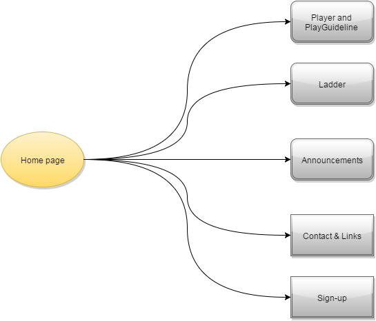

Name: Zhang Cheng
Login: jc266002
Through my work I aim to provide the client with a professional Diggers Beach Volleyball website which is attactive and suitable for target audience and can make more prople know this sport and attract more people to join it. Due to most of the members in this company are 35-50 years old, so client need a website to make more younger people to paly beach volleyball.
To evaluate the success of my website, I can use the pageview which equal to number of people multiply by number of page they view. The most standard to evaluate a business website good or bad is its ability of making profit. Member is more important than viewer, because more members can bring more profit. So the number of sign-up is an important standard to evaluation if my website meet the requirement of client or not. Otherwise, people also can use PageRank to evaluate which is an algorithm created by Google.
The target audience of my site are high school kids and young adults who are eager to enjoy beach volleyball. For this group people, I will intentionally design more colorful, using an especial front and bold the most useful information.
 ...